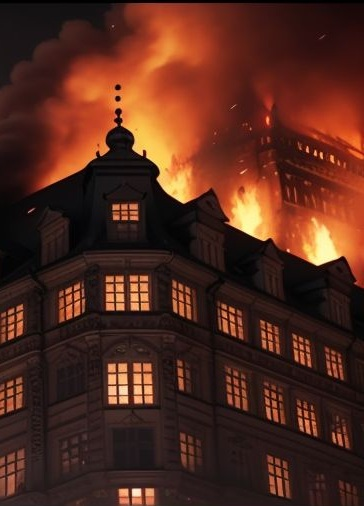
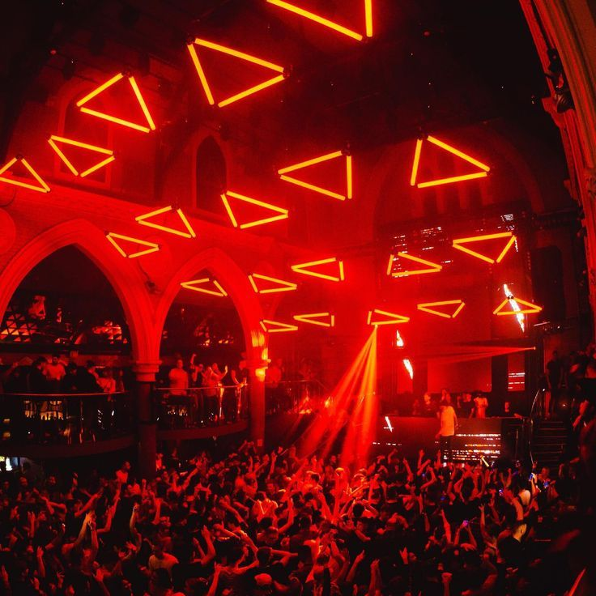

Blackout in pieno centro
Numerosi focolai dolosi culminano in un attentato

Diverse zone della città sono state colpite da improvvisi incendi, tra cui un intero edificio andato in fiamme senza, fortunatamente, che ci siano state vittime, e con un misterioso blackout che ha gettato il centro nel buio. I vigili del fuoco sono intervenuti in diverse zone, ma la causa degli incendi rimane sconosciuta: alcuni cittadini ipotizzano un sabotaggio, ma le autorità non hanno confermato questa ipotesi.
La causa principale del blackout, invece, è imputabile a una centrale di derivazione energetica situata in Stare Mesto che è stata danneggiata in seguito ad un'esplosione causata da un ordigno artigianale, dando ampio spazio al clima terroristico e di tensione che sta attanagliando la città nell'ultima settimana.
Caos e mistero nel Cuore della Città: Notte di Scontri e Sparizioni
Una notte di violenza e confusione ha sconvolto la città di Praga, con scontri a fuoco, incendi e sparizioni che hanno lasciato i cittadini in preda al panico e all'incertezza. Le forze dell'ordine sono state dispiegate in massa in diverse zone della città, ma la situazione rimane caotica e piena di interrogativi.
Il noto locale notturno del centro è stato teatro di un violento scontro a fuoco. Testimoni oculari riferiscono di aver sentito spari e di aver visto diversi individui fuggire dalla zona. Le autorità non hanno rilasciato dichiarazioni ufficiali, ma si ipotizza un regolamento di conti tra bande rivali o un attacco contro il locale.
In mezzo a tutto il caos, diverse persone sono scomparse nel nulla. Testimoni riferiscono di aver visto individui trascinati con la forza fuori dal Noc u Tynske, ma le autorità non hanno rilasciato dichiarazioni in merito. Si teme che le sparizioni siano collegate agli scontri e al mistero che avvolge la città dall'inizio dell'anno.
Le forze dell'ordine stanno conducendo indagini serrate per fare luce sulla vicenda e identificare i responsabili della sparatoria, cercando di scoprire chi si cela dietro lo scontro e le sparizioni che ne sono seguite.

Rivelazioni Shock: il Complotto nel Governo della Cittàu
Le recenti attività di polizia, gli scontri e le sparizioni hanno sollevato dubbi sulla stabilità del governo della città e sul suo coinvolgimento in un possibile complotto. Fonti anonime suggeriscono che alcune figure di spicco potrebbero essere coinvolte in attività illecite, e che le violenze recenti siano solo la punta dell'iceberg.
Alcuni cittadini temono che le violenze recenti siano il risultato di una lotta di potere tra fazioni rivali. Le strade di Praga sono pericolose e i cittadini sono invitati a rimanere vigili e a segnalare ogni attività sospetta.
La situazione attuale ha gettato la città nel caos e nella paura. I cittadini si sentono insicuri e temono che la situazione possa peggiorare. La polizia è stata dispiegata in modo massiccio, ma la situazione è ancora lontana dal tornare alla normalità.